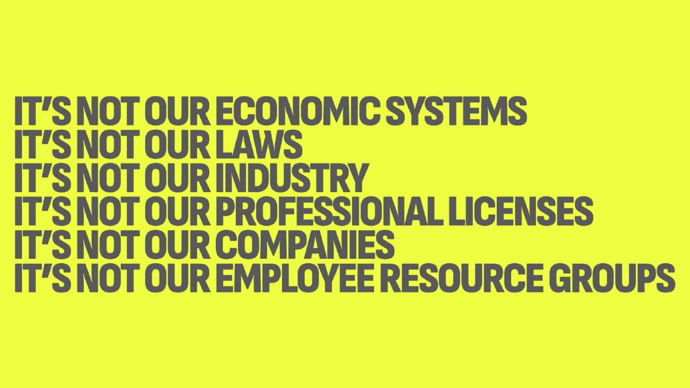

Hi there, Accessibility Toronto. My name is Eric, and I’m a senior accessibility designer by trade. I’m a tall White man with black hair and beard, who is wearing trendy glasses with clear frames. My pronouns are he/him.
A copy of this talk can be accessed by using the QR code shown on screen, or by going to eric w bailey dot website forward slash a 1 1 y t o c o n f 2 0 2 5.
The images used on these slides are predominately thematic, and the slide’s spoken content addresses these themes. If not, the images will be specifically called out.
Additionally, this talk will use high contrast color values to drive the overall tone and mood. You can avoid the screen and listen along, or use a button to toggle the images off or desaturate them on the copy of the talk I link to.
Slide 2
As a content warning, this talk will discuss substance abuse, compulsive behavior, depression, and self harm. It is also centered around discussing trauma and how it affects our industry.
Here, I would like to point out that the act of discussing trauma itself can bring about negative emotions and reactions. I know that content warnings are more commonplace in inclusivity spaces, and in the same breath I want to seriously re-stress that the placement of this content warning is highly intentional. We will be directly covering some incredibly heavy concepts.
Slide 3
With that established, I’d like to now introduce this talk:
It is called “It is designed to break your heart” and it is about cultivating a harm reduction mindset as an accessibility practitioner.
Slide 4
There are two truths here, held in two fists. This metaphor was taught to me by my friend and coworker Alexis Lucio. It was in turn taught to them by Lisa Olivera, their therapist.
The first truth is that I really like my job, and that I think I’m uniquely suited for it. Our work is supported, and my peers are great people doing good work. I’m grateful for the deep level of fulfillment I get from performing this labor, and it is some of the most impactful work I’ve done in my entire career.
The second truth is that I also struggle with this job. The very nature of accessibility work takes a toll. This is even in an environment that is, by my estimation, one of the best in the entire industry.
Slide 5
To that point, I’d like to take a moment here and speak to each and every accessibility practitioner attending this talk.
Slide 6
You are seen.
You are appreciated.
Your efforts matter.
You are not alone.
Slide 7
If nobody has told you directly, thank you for what you do. The world is a better place for it, and we’re lucky you’re here.
Slide 8
With that established, I’d like to talk about 2023. It was… a lot.
Covid continued to rage and with that comes the isolation quarantine brings. There were multiple platform deaths and community collapses, both offline and on. I continued to be disconnected from many friends and loved ones.
Political instability was showing up both internationally and domestically, and all I could do was read about it with waking horror.
Layoffs were sweeping the tech industry and my employer was no exception. Entire teams would be disappeared overnight, and I was left wondering if we’d be next.
This fed a deep insecurity that I’ve carried with me since childhood. My father was laid off, fell behind the curve of tech, and was never able to successfully re-enter the job market.
I was abusing alcohol as a coping mechanism for all of this. This created a feedback loop that was amplified by my already existing anxiety and chronic insomnia.
I’ve danced with depression my entire life, and it deepened to the point where multiple panic attacks struck, as well as manifesting intrusive thoughts and dissociative events so strong that I lost time. My marriage also suffered, and that’s something we’re still actively working to repair.
I also started taking a deep look at what makes me tick, revealing Aphantasia, Dyspraxia, Severely Deficient Autobiographical Memory, and Alexithymia. All of these are strong indicators of neurodivergency and autism, which is something I’m still trying to get to the bottom of.
So, it was also a very personal reintroduction to the disability community, and my identity within it.
Slide 9
I fell apart on on September 8th, 2023.
I was admitted to the ER with a blood sugar level in the 400s, a triglyceride count that was twelve times higher than the normal range, and a blood pressure measurement that was labeled as a hypertensive crisis.
The reason I’m alive and giving this talk today is sheer lucky coincidence, but my emotional state at the time was so depressed and dissociative that the severity of the day completely did not register.
Slide 10
I say these things not to trauma dump, or to elicit pity. Instead, as a person in our industry who is notable for the content they produce, I want to let you in. Please know that I’m also a human, with all the joy and sorrow that comes with it.
The struggles I’ve experienced are not evident in the material I normally share, and I’m not sure if that’s healthy. Because of this, I believe that sharing this vulnerability helps to serve as a framing device for the rest of this talk, and open the doors to things I think we’re all hesitant to discuss.
So, why do I feel this way? And how can I make sure I never feel this way again? I won’t lie: it all started as a selfish impulse to avoid feeling this pain again at all costs. Because I am the way I am, I started to research.
Slide 11
But I also began to wonder: Am I the only one out there that feels this way?
I’d need more than ten fingers to count the number of digital accessibility talks about burnout that I’ve attended, so I know that’s not true.
Slide 12
My friend Devon Persing was also researching this phenomenon. Their book, The Accessibility Operations Guidebook, is an excellent resource for how to combat burnout as an accessibility professional and make your efforts more sustainable.
Devon also did the work. Here is a quote from her about her research efforts:
Slide 13
In late 2023, I interviewed 20 accessibility specialists to learn about their work and burnout experiences. Every single one was in burnout or burnout recovery, or was actively avoiding burnout using skills they learned from previous bouts of work burnout.
This included people in different roles, at different types of organizations, from different countries, and at all stages in their careers—from 20-plus year veterans to interns. Everyone cited the same reason, that it wasn't accessibility work that put them in burnout. It was all the work they had to do to be allowed to do accessibility work that caused burnout.
Slide 14
Accessibility Toronto: We are not doing okay.
There is so much we need carry in our heads and contend with to be able to do what we do.
Slide 15
There’s the inescapable truth that we live in an world suffused with ableist and eugenic thought.
How that intersects with the overall tech industry landscape.
The presence of myths, outdated, and straight-up misinformation about disability and technology.
The diplomacy it takes to deliver hard truths in a soft way.
The horrible calculus required to triage and prioritize issues.
The complexity of the work itself, and the perfection it demands.
The need to mask and put on a good face.
The constant background pressure to use your lived experience as leverage.
The isolation all of this can cause, especially if you’re the sole accessibility practitioner at your organization.
Slide 16
And your ability to constantly reconcile all of this.
Slide 17
This is the crucible that we are all are placed inside of.
And let me be clear, this does not remove impurities. It just melts you.
Slide 18
The work never stops. But you will.
This led me to my first revelation:
Slide 19
There will never be an end to inaccessible technology, because technology never stops.
On this slide is an narrow stone, chipped into a rough teardrop-shape. It’s a handaxe found in Tanzania, Africa from the lower Paleolithic era, around 3.3 million years ago.
Humans have been producing technology for as long as we’ve been human, and technology does not exist in a vacuum. Its form, and the environment it is used in affect who can use it.
And that’s the paradox that lives at the heart of accessibility work: Nothing can ever be 100% accessible to everyone, but it can be made to be more accommodating to the individuals who use it.
So now, knowing this, let’s take a broader view of things.
Slide 20
“The purpose of a system is what it does” is a quote attributed to Anthony Stafford Beer, a British theorist, consultant and professor.
I think a lot about this quote in terms of intent versus impact, in that the most effective way to understand a system is to know what it materializes in reality. Everything else is secondary.
Knowing this allows us to conduct inquiry about the outputs a system manifests, and chase them back to their points of origin.
Slide 21
To that point, I’d also like to quote senior accessibility specialist Shell Little. It’s from her excellent talk, The Accessibility to Burnout Pipeline.
In this talk, Shell discusses why burnout is more prevalent in our line of work, and also opens the doors to talking more about how we’re all collectively doing. She also mentions that:
Slide 22
“It is not the actual work we do. It is the environment that we are forced to do the work in that is the problem.”
This brings up another vital aspect, and that is:
Slide 23
Your job will generate trauma.
Researchers Pat Vivian and Shana Hormann instruct us that organizational trauma can emerge from quote, “a single devastating event, or from the effects of many deleterious events over time.” Endquote.
As accessibility practitioners, we need to come to terms with harm being an inevitability, as we are doing work in environments built to incentivize profit above all else.
We also need to know that, without mechanisms to affect change, job-related trauma will be unconsciously and consciously inflicted on us over and over again.
Slide 24
Speaking in generalities, burnout is spoken about like a lit match: that there is a straight line from labor to burnout. Here, burnout is positioned as an effect and our efforts are the cause.
However, I’d like to offer a reframe: Burnout is one of many possible symptoms, and that these symptoms are caused by organizational trauma.
Slide 25
Alba Villamil, Karen Eisenhauer, and Vivianne Castillo speak to organizational trauma in their landmark body of work, Why Corporate Playbooks Fall Short in Tackling Organizational Trauma.
This resource is shared on HmntyCntrd, their design consultancy, and I enthusiastically encourage you to read it in full.
Slide 26
Quote: Most resources on workplace trauma recommend employees build up their personal resilience or their ability to “bounce back.” Doing so not only shifts the burden of healing to individual employees but also hides how organizational responses can be traumatic, even those meant to help employees. Endquote.
This report also highlights some harm-creating behaviors that organizations can manifest, and I’d like to highlight four of them that I think are especially relevant to digital accessibility work:
Slide 27
To start, there is weaponized professionalism. This occurs when stakeholders take advantage of the empathetic nature of care-oriented roles to guilt people into taking on more responsibilities and performing past their limits. A common form of this is being set up as “the voice of the user” with zero additional resources or clout, and then being expected to go to the mat for each and every instance where human considerations are deprioritized.
Organized abandonment forces individuals to figure out how to navigate systemic failure to manage their own needs. This is a concept brought to us by Ruth Wilson Gilmore, professor, abolitionist, and Director of the Center for Place, Culture, and Politics. Of note here is that abandonment is not evenly distributed, and typically most adversely affects services, resources, and people who are perceived as indirectly contributing towards capital.
Psychologist, researcher, author, educator, and speaker Jennifer Freyd teaches us that institutional betrayal is what happens when an institution causes harm to an individual who trusts or depends on it. Here, I would like to call attention to many organization’s public commitments to accessibility and inclusion, the people who are sacrificed in trying to make those commitments happen, and then the institution’s private machinations to subvert, suppress, and walk back said commitments. Specifically, this betrayal happens as a mechanical output of a system. Things like personal improvement plans, demotions, team reassignments, and weighted stack rankings are all artifacts generated when the gears of the machine grind to produce hypocrisy.
A sibling of institutional betrayal is moral injury. This is what manifests when an organization’s actions contradict its stated mission, or the mission of one of its teams—say an accessibility team. In fact, moral injury can be a fractal of hurt. Contradictions can in turn be contradicted, especially in large, hierarchical, and siloed organizations. Accessibility professionals often work laterally and holistically across an organization and can consequently see more of its surface area. Therefore, there are more perceived hypocrisies, perhaps far more than a peer consigned to a single silo. And, to cut to the heart of it: Moral injury can actually harm your sense of self, your ability to trust, and your deeply held beliefs—even if you don’t consider work to be a large part of your identity. With this harm comes an even more insidious phenomenon: Shame and guilt that lead to maladaptive coping responses including feeling like you are a failure or a burden to those around you.
Slide 28
I was talking about all of this with my peer Jan Maarten. He’s another senior accessibility designer, and I consider myself lucky enough to also call him a friend. We often talk about the state of the state of the industry, and his quote struck me enough that I asked him if I could share it.
The quote from him reads: “We’re doing the work that, in any other field, regulators would be seeing to. We do it with none of the authority. So we also end up having to be social workers, professional advocates, educators, and so many other things. Endquote.
This is Jan’s observation, but also not an isolated one. It’s a common enough sentiment that it’s openly discussed in multiple spaces I’m present in. But what really stood out to me was his use of the term “social worker.”
Slide 29
Everyone experiences job-related trauma, and I do not want to minimize this fact. I also think that we as digital accessibility practitioners have been miscategorized due to how our efforts are externally perceived. Our outputs center around artifacts: Digital experiences such websites, apps, and kiosks.
However, all of this labor stems from a core shared motivating factor that is more aligned with care workers and the labor they perform, and that factor is helping people.
I think about my job now as being a more highly technical and specialized care worker. And just as how doctors and psychologists have specialized peers that they can use for help, there are resources for professional care workers to help them navigate the realities of their job in a healthy and sustainable way.
Slide 30
One such resource I found was the signs of a trauma exposure response, shared by the Trauma Stewardship Institute. It outlines ways a person can react after being exposed to traumatic events and incidents, framed in the context of things care workers in particular need to be mindful of.
Signs include, but are not limited to: Loneliness and strained relationships, hopelessness, hypervigilance, cynicism, depression, exhaustion, negativity bias, compromised impulse control, and addiction.
Slide 31
When I read this, I felt absolutely skewered. I also wonder how many of you in the audience are now conducting a mental inventory.
And the point I’d like to make here is that naming this miscategorization allows us to better understand ways to address our systemic burnout. It frees us to explore what other professions have already figured out.
Slide 32
To that point, I’d like to quote Dr. Amelia Nagoski, co-author of Burnout: The Secret to Unlocking the Stress Cycle. It is from Embodied, a podcast where she discussed stress and burnout. The quote reads:
Slide 33
This is a larger systemic issue that has to be addressed, which is why the cure for burnout is not self care — can never be self care. The cure for burnout has to be all of us caring for each other. Endquote.
Part of the context of this quote is that the reality of a modern environment means the stress factors are also largely modern. This means they can’t be solved by approaches like fighting or fleeing, which speaks to the need for group care.
Slide 34
So, now the question is: In terms of group care, who is the “us” in “all of us caring for each other”?
I can tell you who it isn’t:
Slide 35
It’s not our economic systems.
If you’re disabled and living in the United States, you’re already acutely aware of this. You can’t exist in the the abusive and extractive nature of Late Capitalism and think anything different. It’s pure denial born of willful ignorance.
Slide 36
It’s also not the laws generated by our economic systems.
Here, I point to mask bans despite an ongoing worldwide mass-disabling event, the persistence of coerced sterilization, the state-born pressure of assisted dying, and the barriers to gainful employment we’re already painfully familiar with.
There is also the erosion of hard-fought, hard-won victories from disability advocates of past and present, as the governments of the world embrace Fashistic, conservative thought.
Slide 37
It’s not our industry.
Here, I’ll point to companies pre-capitulating to the changing political winds. Of note is CVS gutting its accessibility team.
There is also Meta, Google, Amazon, and other companies’ massive DEIA rollbacks, borne from countless CEOs lining up to kiss the ring, fully unmasked in their desire to enact a Kakistocratic, Technofeudalist Meritocracy.
Slide 38
It’s not our professional licenses.
It is entirely possible to create a corporate accessibility program that is completely devoid of the presence of, or input from disabled people. This is the inevitable industrialization that the tech industry compels.
While I am glad that this means the concern now has more mainstream awareness, it also means the work is more closely tied to the forces of economics at scale.
While professional licensure does confer the ability to have more cross-company mobility, will a CPACC give you bargaining power if your department is deemed redundant in the face of automated code scanning and disabled personas simulated by AI?
Slide 39
This deeming of being redundant also tells us that it’s not our companies.
I again point to the senseless layoffs of 2023 to now as evidence of what is possible if our economic systems feel threatened, or even mildly inconvenienced.
I also caution against the supposed internal support systems that are provided, which can be harmful to straight-up dangerous to disabled people. Consider the corporate phrenology of personality-based analysis, mental health care startups that harvest your personal information while pairing you with unaccredited practitioners, and other employee wellness programs designed to prolong your ability to produce labor within the system that creates the harm.

Slide 40
And if it’s none of the previous, you better believe it’s not an employee resource group.
ERGs compel advocacy within the parameters of an organization’s allowed structure. While that can be helpful for concerns that don’t run counter to a business’ general goals, know that their main weakness is having their efficacy slow-boiled away if a company moves to avoid and unmake accountability.
I mention here the landscape post-George Floyd’s murder, and ask in all seriousness if posters or brown bag sessions have been effective in moving the needle on anything.
Slide 41
So, we’ve quickly covered some really heavy stuff, and because of that I’d like to pause here for a second.
Let’s take a deep breath. Hold it for a moment, and exhale.
Think about how you’re feeling. Pay attention to how you’ve positioned your body.
Do you need a break? Take one. This talk is recorded.
Feeling okay? Let’s continue.
Slide 42
So, again, because I’m me, I began to think if all this research I’ve been doing could be used to help others.
I mean, there has to be something more. Is there something constructive I can do with this pain?
Slide 43
So now, let’s talk about connecting threads. I’ve been a member of a trauma-informed group for a few years now.
If you’re not familiar, trauma-informed work is the practice of addressing how our environment can affect us negatively, and then using this knowledge to attempt to reduce or remove the harm. It’s a radical idea, in that it acknowledges harm as a material to work with.
The group is a wonderful mix of researchers, academics, designers, caregivers, and yes, social workers who share knowledge and news, ask questions, and generally strive to move the space forward.
I joined this group after performing some user research with a population I was woefully unequipped to deal with in a safe manner. I realized that I needed to address this shortcoming in order to approach my job in a considered and ethical way. One that did not put more harm out into the world in the pursuit of cold, impersonal research insights.
The larger point being here that in this group I was exposed to vital concepts that sit outside of the normal scope of traditional design, development, and digital accessibility practices.
Slide 44
This, in turn, brings up something that I need to directly address here: The vast majority of the content of my talk is attributed to, or is built from knowledge that sits outside of what I think of as the traditional technology sphere.
This is not new information, nor am I its creator. This knowledge is the product of literal decades of tireless work from activist individuals and groups striving to address deep inadequacies and structural harms visited on us by establishment majorities.
I am using my privilege and position as a White cisgender man to consciously and deliberately take advantage of the reach that Accessibility Toronto provides. I am not the expert, and know that there are very real, very human consequences to doing trauma-informed work. Instead, the idea here is that I am trying to elevate these ideas and broaden their reach.
Additionally, I hope to shed light on the people behind these ideas, and in doing so help create a healthier way of thinking about, and approaching the work we do.
Slide 45
A lot of this knowledge comes from marginalized, minoritized, and discriminated individuals that did this work, notably from QTBIPOC populations. I deliberately and specifically want to avoid erasure here, and I hope you’ll help keep me honest in doing so.
Also note that a lot of these voices have been lost to time due to how society has failed them. So know that sometimes when it feels like someone should be named for their ideas, that information has literally been scrubbed by forces that indirectly and directly pushed them out.
Another thing I am hyper-cognizant of is how the tech space in particular defaults to a savior attitude. This is something I think people in Disability Justice spaces are already painfully aware of, but may be a concept newer to those in the digital accessibility space.
With saviorism comes centering the wrong person, but also a far more subtle and sinister output: Extraction.
While I do encourage you to explore this space, I also want to stress that when we cease to see individuals as people and instead as data points, we discard their humanity in the search to help productitize lived, and oftentimes traumatic experiences.
Slide 46
We’ve already established that burnout is one of many things that can be caused by trauma, but now we need to dive into the concept on a deeper level to better understand it. As a base working definition, trauma is “an emotional, cognitive, or physical response to a terrible acute, complex, or historical event.”
What I want to spend time on here is discussing trauma not as an abstract concept, but as a concrete thing. A thing that that has been exhaustively researched and worked on from multiple people from multiple backgrounds, both in isolation and also as collaborative efforts that build from past research.
Trauma is not just an individual, personal problem. Here, we must acknowledge that trauma is a system, and the system itself is the issue. Systems, including organizations, will create trauma. Because of this, effective change must also include organizations.
Here, know that the trauma these systems create can, and do push people towards negative, self-destructive behaviors as coping mechanisms.
Slide 47
Accessibility and qualitative research advocate, friend, and trauma-informed design peer Josh Kim tells us that quote, “Trauma is systemic as an interconnected flow between individuals, groups, and societies. We can't address trauma at a societal level unless we address it at an individual level. Conversely, we can't address trauma at an individual level unless we address it at a societal level.” Endquote.
So, how do we simultaneously address trauma at both individual and societal levels? The answer is harm reduction.
Slide 48
There’s a quote from HIV alliance dot org that I think frames harm reduction well, which is, “Meeting someone where they are at without leaving them there.”
If you are not familiar with the practice, harm reduction is the act of working with people to lower the negative impact of behaviors such as substance abuse.
Slide 49
Harm reduction accepts that people will make the choices they make. And that while we can’t stop them, we can offer them resources to lessen or remove the severity of their actions. Harm reduction tackles the stigmas associated with abuse head-on by directly acknowledging and working with them.
Today, the practice is recognized and promoted as a quote “transformative approach” by the Substance Abuse and Mental Health Services Administration in the United States. I recognize that this is an appeal to authority. But I’d also like to point out that in terms of power dynamics this is a top-down organization acknowledging the efforts of bottom-up movements.
Slide 50
To that point, know that the origins of harm reduction as a concept and practice have manifested multiple times in multiple ways.
Of note are the Chicago-based Young Lords, a gang-turned civil and human rights organization active in the 60s and 70s. Their social programs included care treatments and techniques for people who experience substance abuse concerns that are still used today.
There is also the second wave feminist movement, which pushed for more knowledge and destigmatization of sexual and reproductive health. This includes a core message of bodily autonomy, decriminalization of abortion, and pushing for informed consent in the face of sterilization abuse.
Activists in the the AIDS crisis are largely responsible for the normalization of needle exchanges.
And free breakfast and health clinic programs popularized by the Black Panther movement became contemporary public school breakfast and health programs, respectively.
Each of these movements have a common, unifying thread to acknowledge: A collective response to systems of power that failed, dismissed, or actively sought to eliminate the people they purportedly serve. Here, I would like to bring up the erasure factor I mentioned previously.
Slide 51
Specifically, I would like to call attention to the the Black Panthers providing both food and publicity to the activist occupation of government buildings in order to pressure the enactment of Section 504 of the Rehabilitation Act of 1973. This is an example of the intersectional support and solidarity that is required to do this kind of heavy work, and we should acknowledge and understand that.
Additionally, I’d like to point out that this key moment in disability history is often conveniently forgotten in an industry full of inspirational narratives. It is part of a larger issue of making difficult, yet important realities more palatable by way of practices such as access washing.
Slide 52
Speaking of acknowledging difficult issues, the concept and practice of trauma-informed design directly stems from harm reduction. It is a design practice that acknowledges the reality of harm and harm reduction strategies, and applies them to physical and digital environments.
The goal of trauma-informed design is to identify systems that create and inflict harm on the people that exist within them, and then work to holistically update the system to promote safety, resilience, and healing. The core idea with all this being that any reduction in harm is better than nothing. And if this is starting to sound like how you think about your job, let me now run this by you:
Slide 53
Trauma-informed design and disability theory both use various models to help them contextualize their efforts, and that there are massive amounts of overlap for how these models are perceived and used. Here I’d like to credit Dr. Carol F. Scott, co-Founder of Trauma-Informed Technology, for this insight. Learning about these parallels when interviewing her really helped to unlock this talk.
For starters, there’s a moral model of addiction and a moral model of disability. Both frame their respective subject matters as personal or familial failings. They also stigmatize the person affected, and media commonly portrays them as villains and monsters, as well as objects of pity.
Slide 54
Medical models of addiction and disability see the person as someone to be cured. As systems, both are regressive, binary, all-or-nothing affairs. You’re either broken, or you’re airquote fixed.
Of note here, I’d like to comment on the power dynamics present with both moral and medical models. They are top-down, authoritarian, paternal, and reductionist, in that they implicitly oversimplify and remove the agency of the people affected.
Slide 55
With the social models, the larger context is taken into consideration. For disability it is the built environment. For addiction, things like cultural norms and socioeconomic status are also factored in.
These models are both holistic and adaptive, meaning that they are compatible with other theories, methods, and ways of being. The goal of the social models of disability and addiction is to center, and empower the individual, and in doing so reduce stigma and harm.
And that’s what we ultimately want to do as digital accessibility practitioners, right? We want to remove harm, empower, and grant agency to the people who use our services, and do so in a healthy and sustainable way.
In order to do this, we need to better adapt to, and work within the systems we are placed in.
Slide 56
The thing is, change is slow for people, but it’s even slower for organizations. Because of this, we need to be the ones who adapt our perspective. We need to accept human behavior for what it is. You can't be perfect all the time. We're human, and therefore fallible.
Trauma and harm are inevitable outputs of the imperfect systems we exist in. Even in the best-case scenario we need to be better equipped to navigate the difficult realities of digital accessibility work. This compels a trauma-informed, harm reduction mindset, and leads us to my second revelation:
Slide 57
Tech is a drug. And the people who make it will use.
The irresistible compulsion to create technology is an inevitability, and it’s a cycle that has been around for as long as there have been humans. And with this compulsion comes the unintentional or deliberate restriction of access to those the tech is distributed to.
This is combined with a contemporary culture that has near-completely decoupled itself from the ethical principles that should be helping to govern it.
We need to understand, accept, and internalize this, even if we don’t like it. We need to get out of a reactive, audit-based mode of thinking, where we need to wait for harm to be created in order to respond to it.
This is the Medical and Moral models all over again: Attempting to apply top-down, paternalistic cures to symptoms only after they have been brought to our attention, and then judging the people who manifested those symptoms.
It also means we are perpetually trapped in anticipation of hurt, and this permanent flinching means we can never unclench.
Another lesson from trauma-informed design here: We can’t work harder than the system. When it comes to accessibility, we need to be better at meeting our peers where they are and matching the level of work they are willing to do themselves.
Slide 58
Consider the harm reduction practice of supervised injection sites. It is a way to lessen the harm of an action that will happen, regardless of your views on the subject.
These days, I think about the weekly office hour sessions and Slack channels we monitor a lot like supervised injection sites: The people who show up are going to create tech, but want to do so in a safer way.
Here, we’re meeting people where they are. We’re providing guidance for more accessible approaches, with the hope that they’ll come back until they reach a point where they don’t have to anymore.
Slide 59
But we’re also holding that second truth that some individuals will try every trick in the book to wriggle out of doing what they need to do, and that you can’t help these people until they feel they are ready to be helped.
This isn’t a reactive, all-or-nothing affair in the style of the Medical model of disability or addiction. See, we are avoiding needing to demand that technology needs to be completely reworked after it has been put out into the world. We’re not treating only the symptom—instead we’re working within a system’s constraints to find a more effective approach.
It’s also a framework for us as digital accessibility practitioners to become more comfortable discussing and managing uncomfortable topics and behaviors. This, in turn, helps ourselves, our coworkers, and the audiences we ultimately serve.
Slide 60
The National Harm Reduction Coalition has eight principles of harm reduction. They frame it as, quote “a set of practical strategies and ideas aimed at reducing negative consequences.” Endquote.
I’d like to introduce parallel principles I’ve been developing while doing my job, each adapted from these original eight.
Here, I’ll be discussing how each principle translates into the practical, to better help steer our efforts in a constructive and sustainable way. To me, this is trauma-informed design. We’re acknowledging our environment and working with it to promote healing and lessen harm.
For the sake of time, I’ll only be reading the adapted principles, but I do encourage you to read the original eight on your own time.
Slide 61
Let’s say a team is coming to you for advice on a new date picker component. It has two parts: A button, and the date selection UI that the button toggles open.
To begin, the two principles that steer this overall interaction from a high level are:
Slide 62
“Accepting, for better or worse, that ableism is a part of our world and choosing to work to minimize its harmful effects, rather than simply ignoring or condemning it.”
Slide 63
To that point, another principle we acknowledge is “Calling for the non-judgemental provision of services and resources for people who create access barriers within the disciplines in which they work, in order to assist them in reducing harm.”
Slide 64
You see, people are coming to this engagement knowing that they want to do right thing, and that they need help.
This could be coming from a box-checking exercise, or a genuine act of compassion. Regardless, we’re meeting people where they are instead of pushing them away.
Slide 65
We also “Do not attempt to minimize or ignore the real and tragic harm and danger that can be created by inaccessible experiences.”
This principle allows us to triage and address the worst of the harm upfront, in that we figure out if there are critical barriers or not. Knowing this, we can then inform others about the severity of their architectural choices.
Slide 66
Moving it into the practical, we first determine if the date toggle button is using a button element in code, or something like a div with a click handler.
If you’re less comfortable with code, know that a button element allows for accessible, keyboard-based interaction, while a div does not unless extensively modified.
Slide 67
The principle that applies here is one that “Understands that how access barriers are created is a complex, multi-faceted phenomenon that encompasses a range of severities from life-endangering to annoying, and acknowledges that some barriers are clearly worse than others.”
Slide 68
Another consideration: The button does not have a visible text label, and uses an icon that’s a simplified, minimal illustration of a physical desktop calendar. We know that the lack of a visible text label makes it more difficult for people who use voice control software to activate, as well as some populations not recognizing what the icon represents.
Here, I’d like to call attention again to the third principle I mentioned, that some barriers are clearly worse than others. This is the flip side of it, in that in some issues are annoying, but not necessarily unusable.
Slide 69
And here, I’d like to introduce another principle. It “Recognizes that the realities of poverty, class, racism, social isolation, past trauma, sex-based discrimination, and other social inequalities affect both people’s vulnerability to, and capacity for effectively dealing with creating inaccessible experiences.”
Slide 70
The lack of a visible text label is a lot like the lack of number inputs that allow for quick date entry. In terms of raw usability, these missing inputs objectively make for a better experience. However, it is also a nice-to-have supposing the rest of the designed interactions are accessible and operable.
For me, this was one of the toughest things to internalize, in that I want what is best for the people we serve. However, the rigidity in thinking that an audit-and-remediate-based mindset confers fails to acknowledge that discussing these sorts of things first requires cultivating deeper relationships with our peers.
The goal here is not to use the session as a way to demonstrate how knowledgeable we are at the expense of alienating someone who came to us for help. The goal is to reduce harm, with the ultimate hopes of both eventually removing it, and also equipping others to recognize and avoid it.
To that point, we must acknowledge the previously described principle and recognize that social inequalities affect people’s vulnerability. The things that we are attuned to as accessibility professionals may have never occurred to the people creating the component, and some of that could be the forces of their lived experience.
Consider how coding bootcamps relentlessly target what the market demands to make candidates hirable, and how many people who face social inequalities use bootcamps—and the cushy tech job salaries they promise—as an attempt for upwards mobility. Then consider the optics of admitting ignorance on something in a corporate setting, and how age, race, and gender tie into that.
This is to say nothing about what design and development culture hands out awards, accolades, and promotions for. Systems within systems.
Slide 71
We also have the date selection portion of the component, represented here as a calendar set to February.
The thing here is that we need to look at this minimal design through the principles that remind us that improvement of quality is success, and that empowering people also helps them help their peers.
Consider for a moment a situation where you think something like this will be an easy fix at first glance, but digging into it more reveals that it will actually take months of labor from multiple teams to address. This would normally be a stonewall moment for an audit-based mindset. We deliver a hard truth after the fact, and likely nothing changes.
Instead, we take a path where we collaborate with our peers and provide the resources they need to improve this work.
Slide 72
In doing so, we grant them the ability to discuss how they got to this point, what constraints they are contending with, what choices they made, and why.
Granting them the agency to communicate these things allows them to articulate their processes. This gives us insight into the health of the team producing the work. This is good. It leaves teams feeling empowered to have an open dialog, and meets them where they are.
This means we as accessibility practitioners can then adjust our strategies to adapt to, and more effectively communicate about how they think about what they produce. This in turn helps them improve their work, both as individuals and as a team.
Slide 73
There are two principles here that guide this change in approach.
The first of the two “Establishes quality of individual and team life and well-being—not necessarily cessation of all current workflows—as the criteria for successful interventions and policies.”
Slide 74
And the second of the two “Affirms people who create access barriers themselves as the primary agents of reducing the harms of their efforts, and seeks to empower them to share information and support each other in creating and using remediation strategies that are effective for their daily workflows.”
Slide 75
Returning to the component as a whole, we recall the principle that does not minimize the real and tragic harm inaccessible experiences create.
With that, we now cover our 8th and final principle:
Slide 76
“Ensuring that people who are affected by access barriers, and those who have been affected by your organization’s access barriers, have a real voice in the creation of features and services designed to serve them.”
Slide 77
This holds us accountable, and compels us to understand and internalize that which we might otherwise be inclined to hand-wave away.
We are intentionally including perspectives of disabled people as part of this work—not as extractive resources or as tokenized chess pieces for organizational politics—but instead as peers.
The combined principles have contributed towards powerful people at my company taking note and allocating more resources for these kinds of efforts. This creates a virtuous feedback cycle that is moving the needle on multiple fronts: Working relationships, quality of experience, and removal of access barriers.
Slide 78
Here’s the principles again. This is the shorter version, used to reinforce the overall point I want to make. They are:
Accepting ableism and minimizing it.
The provisioning of resources is non-judgemental.
That we do not minimize or ignore real harm.
That some barriers are worse than others.
That social inequalities affect vulnerability.
Improvement of quality is success.
Empowering people also helps their peers, and that we
Ensure that disabled people have a voice in change.
Slide 79
Technology never stops. Because of this, you can’t “win” accessibility.
You also can’t win trauma. It’s an inevitable part of our contemporary working world, made more acute by the nature of the work we do.
It is more a question of how we acknowledge, understand, and work with it. And when I say we here, know that I am being very intentional.
Slide 80
“Accessibility is political.” That’s a drumbeat of a message that you’ll hear from Steve Faulkner, Director at TetraLogical and W3C spec editor.
I think a lot of people think about this quote in terms of remembering the history of why we do what we do.
But I also think there’s another aspect to this quote, which is acknowledging the current reality of things.
Slide 81
“Nobody is coming to save us expect us. And that is enough.”
To that point, we’re now going to talk about community.
Slide 82
Resiliency needs to be a community and not a callus.
Systemic change requires engaging with the forces that govern us in some way other than than enduring things up until we can’t.
We’ve largely forgotten how to do this, or haven’t even known it was something we could do in the first place. And that’s the trap of the audit-and-remediate-based mindset:
The labor of a for-them and not with-us approach, and the surface-level analysis it compels, distracts us from the deeper structural inquiry and criticism we need in order to not only survive, but also flourish.
So, as this talk draws to a close I’d like to thank my community: Emily, Alexis, Devon, Shell, Jan, Josh, Carol, Steve, Ethan, Anna, Chelsea, Matt, Soren, Raquel, Caitlyn, Jennifer, Florian, James, and so many other friends, family, and peers who helped me to reach this point today.
Slide 83
In threading their voices and perspectives in, I’m hoping to communicate the adaptive and intersectional, ground-level interdependent peer-based support that is required.
I also don’t have all the answers.
Slide 84
However, what I do know is that we can figure this all out together, and that’s exciting.
A better world is possible. In closing, I’d like to end with a final quote. This time it is from Christiana Figueres, a Costa Rican diplomat who was instrumental in the success of the 2015 Paris Agreement:
Slide 85
“We’re only as doomed as we believe ourselves to be.”
Slide 86
In a time when fear and hate are ascendant, I choose joy.
On this slide is my dog, Chicken. She’s a small, adorable Havanese/Poodle mix staring up at the camera with an excited expression on her face.
This talk, including the references and resources displayed, and the background research that went into it are listed on my site, which is eric w bailey dot website forward slash a 1 1 y t o c o n f 2 0 2 5. There are also ways to contact me there, including, Bluesky, Mastodon and regrettably, LinkedIn.
And thank you for your time and attention today, I really appreciate it. Be well and be safe.

![A man sitting in a foling chair, cradling his head in his hands. Behind him is a wall of text. The text reads, 'The inescapable truth that we live in an world suffused with ableist and eugenic thought. The late-stage capitalist society that this world created. A dying environment that is experiencing multiple mass-disabling events. The overall tech industry landscape. the landscape of your employer’s domain. A holistic view of how technology works at scale, as well as for an individual. The social media landscape, it’s fracturing, and how that all affects tech and political concerns. The conference circuit and cult of celebrity . The perpetual threat of overlays and technoabelist disability dongles attempting to capitalize on ignorance. The web content accessibility guidelines and supporting material. Web standards theory and practice. HTML, CSS, and JavaScript, and each language's particulars, bugs, and quirks. Web browsers and their particulars, bugs, and quirks. Operating systems and their particulars, bugs, and quirks. Assistive technology and their particulars, bugs, and quirks. Performance and connectivity considerations and concerns. The presence of myths, outdated, and straight-up misinformation about disability and technology. Your organization’s policies, practices, and internal standards. The goals of your organization’s leadership, and the incentive structures they provide to achieve them. The politics these goals create. Minding, and working with the downstream effects of these goals as they relate to planning work. Performing change management to steer planning in a way that improves outcomes for your team, as well as the rest of your organization. Adapting to abrupt changes in organization priorities. The strategies you need to cultivate to hold people accountable when those priorities are dropped. The slog of needing to reverse legacy decisions that are no longer in the current window of priority. Contending with lack of leverage you often have when attempting to enforce accountability, especially when they get in the way of an organization’s goals. Budget and headcount, and how it affects what you’re able to do. Your working relationship with your coworkers, both on the accessibility team and not. The diplomacy it takes to deliver hard truths in a soft way. The horrible calculus required to triage and prioritize issues. The patience it requires to explain the fundamentals from first principles to peers who make three to four more times as much money as you do. The need to quantify the effort you’ve already performed to prove it’s value. The storytelling skills you need to sell said value. The gamestorming you need to ensure the leaders of your organization don’t lose sight of that value. The complexity of the work itself, and the perfection it demands. The reality that you need to verify and re-verify the work in order to ensure it functions as expected. The same problems over and over again. The terror that you don’t have lived experience and your efforts might actually make things worse. The public relations skills you need to manage internal realities versus external diplomacy. The need to mask and put on a good face for both other internal teams and the public. The armchair psychology skills you need to cultivate to navigate all this. The constant background pressure to use your lived experience as leverage. The isolation all of this can cause, especially if you’re the sole accessibility practitioner at your organization. Your relationships with your friends, family, and loved ones. Your personal relationship with disability identity. Your sense of justice and obligation that comes with these relationships.'](slides/17.png)
![A table of 21 responses. The responses are, 'Loneliness / isolation/strained relationships. Feeling helpless, hopeless, and that one can never do enough. Hypervigilance and always serious. Anger and cynicism. Guilt / fear / complicated grieving. Lack of awe. Sense of persecution. Fight / flight / immobility response. Dissociative moments. Inability to see options and diminished creativity. Physical ailments, depression, anxiety, and other mental health considerations. Chronic exhaustion and saturated nervous system. Pulling toward confirmation bias and away from critical thinking. Lack of presence / deliberate avoidance/cognitive overload. Intense / rigid / controlling / unable to embrace complexity. Disheartened and dispirited. Grandiosity. Negativity bias and not assuming well. Difficulty emphasizing / minimizing / numbing. Sub-impeccable / toxic conduct and compromised impulse control. Addictions.'](slides/32.png)


![Two principles, the adapted and the original. The adapted reads, “Understands that how access barriers are created is a complex, multi-faceted phenomenon that encompasses a range of severities from life-endangering to annoying, and acknowledges that some barriers are clearly worse than others.”. The original reads, “Understands drug use as a complex, multi-faceted phenomenon that encompasses a continuum of behaviors from severe use to total abstinence, and acknowledges that some ways of using drugs are clearly safer than others.”](slides/68.png)
![Two principles, the adapted and the original. The adapted reads, “Understands that how access barriers are created is a complex, multi-faceted phenomenon that encompasses a range of severities from life-endangering to annoying, and acknowledges that some barriers are clearly worse than others.”. The original reads, “Understands drug use as a complex, multi-faceted phenomenon that encompasses a continuum of behaviors from severe use to total abstinence, and acknowledges that some ways of using drugs are clearly safer than others.”](slides/69.png)
![Two principles, the adapted and the original. The adapted reads, “Recognizes that the realities of poverty, class, racism, social isolation, past trauma, sex-based discrimination, and other social inequalities affect both people’s vulnerability to, and capacity for effectively dealing with creating inaccessible experiences.”. The original reads, “Recognizes that the realities of poverty, class, racism, social isolation, past trauma, sex-based discrimination, and other social inequalities affect both people’s vulnerability to and capacity for effectively dealing with drug-related harm.”](slides/71.png)
![Two principles, the adapted and the original. The adapted reads, “Affirms people who create access barriers themselves as the primary agents of reducing the harms of their efforts, and seeks to empower them to share information and support each other in creating and using remediation strategies that are effective for their daily workflows.”. The original reads, “Affirms people who use drugs themselves as the primary agents of reducing the harms of their drug use and seeks to empower people who use drugs to share information and support each other in strategies which meet their actual conditions of use.”](slides/76.png)